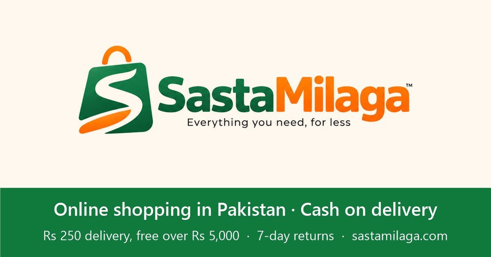

How cash on delivery works at Sasta Milaga

Cash on delivery (COD) lets you order without paying online. You pay the courier in cash when your parcel arrives, so you only pay for orders that actually reach you.
Ordering with cash on delivery
- Add products to your cart. Your cart stays saved on your phone or computer.
- Open checkout and choose “Cash on Delivery (COD)”. Enter your name, phone number and full address with a nearby landmark.
- Confirm on the phone. Our team calls or messages you on WhatsApp to confirm the items, delivery charge and timing before dispatch.
- Pay the courier. Keep the exact amount ready to make delivery quicker.
What delivery costs
Local delivery in Pakistan is Rs 250, and free on orders above Rs 5,000. The total you see at checkout is the total you pay the courier.
If something is wrong
Check the parcel when it arrives. If an item is damaged or not what you ordered, send a photo on WhatsApp within 7 days and we will arrange a return or replacement.
Questions people ask
Is cash on delivery available everywhere in Pakistan?
Cash on delivery is available for Sasta Milaga Local products delivered within Pakistan. Global items are prepaid.
How much is delivery?
Rs 250 per order, free on orders above Rs 5,000.
Can I return a COD order?
Yes. Send a photo on WhatsApp within 7 days if an item is damaged or wrong.
Start shopping How to order Returns & refunds
More guides
Choosing wireless earbuds on a budget
What matters in budget wireless earbuds: fit, battery life, Bluetooth version, noise cancelling and the case. A simple guide before you buy.
Automotive size fit compatibility Pakistan: Size, Fit and Compatibility Checklist
Compare Automotive in Pakistan: listing details, fit and delivered costs. Read product, delivery and return information before ordering.
Audio & entertainment size fit compatibility Pakistan: Size, Fit and Compatibility Checklist
Compare Audio & Entertainment in Pakistan: listing details, fit and delivered costs. Read product, delivery and return information before ordering.